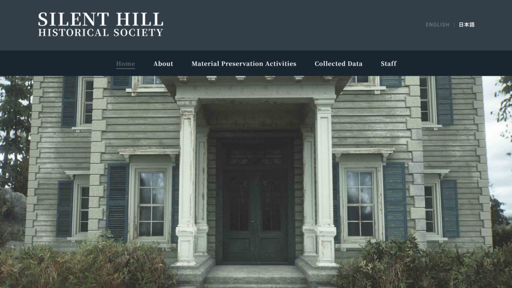
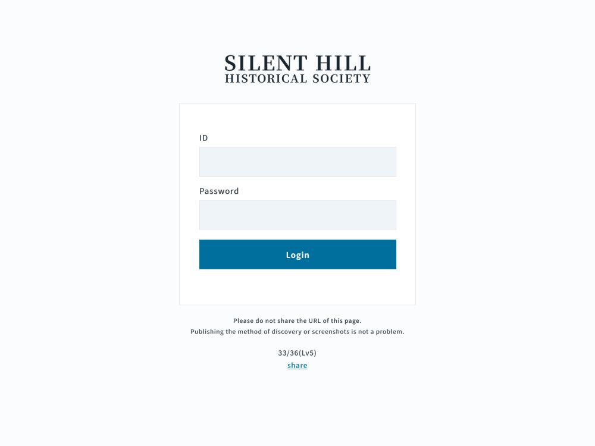
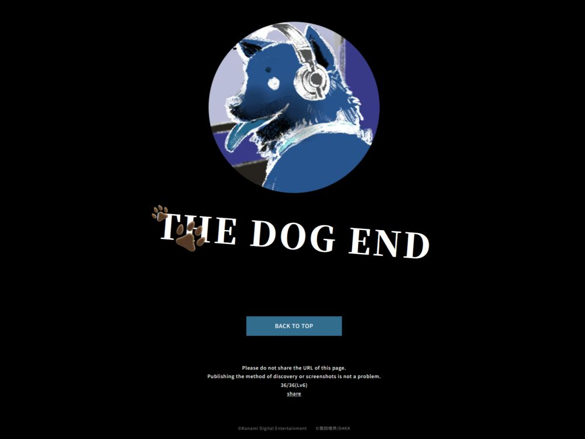

Hidden Pages
There are 36 hidden pages scattered throughout the website. This section will explain how and where to find each pages.
Level 1
1/36
Material Preservation Activities > Resgistration of Material Donation
Change the URL ending to "registration"

https://www.silenthill-historicalsociety.com/registration/
2/36
Staff > Sarah Hendrix >
Click on the heart, then click on "Here"
You've got quite the eye to have found this page.
Between you and me... things have been really hectic around the museum since one of the staff members passed away.
With things like this, we won't be able to plan any events for a while. Maybe it's best if you hold off on visiting until things calm down.
https://www.silenthill-historicalsociety.com/staff/sarah870405/hit/
3/36
Staff > Mabel Grant >
Click on the sandwich
I wish I were better at being thoughtful like Sarah. But I just can't seem to muster up the courage to talk to people. What should I do?
https://www.silenthill-historicalsociety.com/staff/mabel923010/sandwich0420/
4/36
Staff > Ethan Ninomiya
Scroll to the bottom and click on "Back to top"

https://www.silenthill-historicalsociety.com/staff/ethan932704/topreturn/
5/36
Staff > Ruby Sinclair >
Click on Felix (2nd from the left)
Looking back, I guess he seemed troubled even then. If I had just talked to him at the time, would things have turned out differently?
https://www.silenthill-historicalsociety.com/staff/ruby991707/felix/
6/36
Staff > Sarah Hendrix >
Click on "issues"
This is when I really need to step up as the manager...
William doesn't seem too keen on hiring more people, but we need to put up a job posting soon. I don't know why he's hesitating.
https://www.silenthill-historicalsociety.com/staff/sarah870405/leadership/
7/36
Staff > Mabel Grant
Add "nalacat" at the end of the URL
Ruby seems so stressed lately. I wish I could help, but I don't know anything about tech stuff...
https://www.silenthill-historicalsociety.com/staff/mabel923010/nalacat/
8/36
Staff > Ethan Ninomiya >
Click on the bottom area of the picture
When a student comes up to me and says that they want to work here someday, I tell them, "Study hard and get good grades." No better way to have more choices in the future.
https://www.silenthill-historicalsociety.com/staff/ethan932704/forstudents/
9/36
Staff > Ruby Sinclair >
Click on the computer emoji
Taking on the role of network administrator has been tough, and honestly, I still can't believe my coworker suddenly passed away. The police said there was no foul play involved, but...
I haven't come to terms with everything,
but the museum is doing business as usual. Everyone's busy, and we just have to keep doing our jobs.
https://www.silenthill-historicalsociety.com/staff/ruby991707/network/
10/36
Staff > Sarah Hendrix >
Click on the center of the picture
He was so dedicated to his job and always took care of things around here. Everyone admired him. I'm sorry... I just wanted to leave something somewhere to remember him.
https://www.silenthill-historicalsociety.com/staff/sarah870405/1808_rip/
11/36
Staff > Ruby Sinclair >
Click on the cake emoji
With the heavy atmosphere that's been hanging over the place lately, I'm grateful for some good news.
Maybe things will finally start to brighten up again...
https://www.silenthill-historicalsociety.com/staff/ruby991707/hope/
Level 2
12/36
Start at #10
Click on "somewhere"
I can't believe his death was an accident. I have this feeling that something more happened to him. I mean, this town has never been the safest place, you know?
https://www.silenthill-historicalsociety.com/staff/sarah870405/1808_rip_2/
13/36
Staff > Mabel Grant >
Click on the circle (8th from the right)
And David... why does he always post people's personal stuff without asking? It's so annoying.
One time, he even posted a photo of me with my eyes half-closed! I couldn't believe it! Of course, I made him take it down right away.
https://www.silenthill-historicalsociety.com/staff/mabel923010/secretpage/
14/36
Starting at #4 >
Click on the date
That day, my friend told me he was going straight home.
He was always careful because he couldn't handle alcohol. He never drank when we were out.
For a while, there were rumors at the museum that his death wasn't an accident. Then, all of a sudden, people just stopped talking about it. Why?
The more I think about it, the stranger everything seems. What am I supposed to believe?
https://www.silenthill-historicalsociety.com/staff/ethan932704/trust/
15/36
Staff > Mabel Grant
Scroll to the bottom and click on the right period dot (Use inspect element if needed)
The other day, a coworker died. It was some kind of accident on their way home... I should be careful, too.
We're so understaffed right now that I can't leave on time... I really hate walking home in the dark.
At least William gave me a ride to my apartment. When he's around, I feel like I'm safe from any creeps.
https://www.silenthill-historicalsociety.com/staff/mabel923010/ripmyfriend/
Level 3
16/36
Start at #14
Click on "That day"
28-Year-Old Man Falls to Death from Apartment Building...
https://www.silenthill-historicalsociety.com/staff/ethan932704/newspaper/
17/36
Start at Staff
One of Mabel Grant's posts celebrates Felix's birthday with its photo taken at August 29, 2023. On the newspaper in #16, Felix died at July 24, 2024 when he was 28. This would mean that Felix's DOB is August 29, 1995. All of the staff's URL ending are in a [FIRST NAME][YYDDMM] format. Felix's staff page isn't public so it has to be found by changing the URL ending to "felix952908".

https://www.silenthill-historicalsociety.com/staff/felix952908/
18/36
Start at #20
Click on the comma right after "coworker"

https://www.silenthill-historicalsociety.com/staff/felix952908/challenge/
19/36
Start at #14
Click on "alcohol"
Man, 28, Dies in Fall from Apartment Building...
https://www.silenthill-historicalsociety.com/staff/ethan932704/newspaper2/
20/36
Start at #17 >
Click on the bowl
I actually bought this as a gift for a certain coworker, but someone saw me with it and we all ended up eating it. Oh well, at least I got to see her smile.
https://www.silenthill-historicalsociety.com/staff/felix952908/mymind/
21/36
Start at #14
Click on "What" right before "am I supposed to"
Exclusive Report: The Mysterious Death of Felix Crain -- Is There More to the Story?...
https://www.silenthill-historicalsociety.com/staff/ethan932704/journal/
22/36
Start at #17 >
Click on "collection"
It seems there's a missing document. No one can find it, no matter how hard they search the storage room. If word gets out, it'll be a huge problem. Some people at the museum think we should come clean, but others are trying to keep it quiet.
https://www.silenthill-historicalsociety.com/staff/felix952908/data/
23/36
Start at #17 >
Click on the period at the end of the post
I submitted a proposal to our Director, William S Laver, about the museum's current state and its management. We'll be having a meeting to discuss it soon. There are some things I've been meaning to ask him personally as well, so it's a good opportunity.
I'm sure William and I share the same goal of making this museum the best it can be. I have faith that he'll listen to what I have to say.
https://www.silenthill-historicalsociety.com/staff/felix952908/proposal/
24/36
Collected Data > Understanding Silent Hill... > Lakeside
Find the image at the bottom of the page and click on the flag on top of the carousel
If something goes down, I stashed the messsage on this site
I'm the only one who could pull that off
https://www.silenthill-historicalsociety.com/feduifhg4ig5h/
25/36
About > Message from the Director
Keep clicking until you find the hidden page, or use inspect element to find the link
Isabel Smith's my aunt
She was always all smiles
She got caught up in that unsolved serial murder in this town and passed away when I was 12
https://www.silenthill-historicalsociety.com/5n6ifv75gfs/
26/36
Collected Data > Silent Hill Timeline
Keep clicking until you find the hidden page, or use inspect element to find the link
I'm so sorry she left her little daughter behind
That's why I thought I should try to solve this case myself
https://www.silenthill-historicalsociety.com/bvmdh4j6l40/
27/36
Collected Data > List of Featured Articles > Special Feature
Click on the off-colored smudge
One day, completely by chance, I stumbled upon something unexpected
I found a person using an alias
He's the one who saved my life
https://www.silenthill-historicalsociety.com/89fnbhr3vfb543/
28/36
Collected Data > List of Featured Articles > Entertainment District
Click on the off-colored smudge below the pizza image
I started searching for the reason he was using an alias
Then some facts started to come together
All I had was a bad feeling
https://www.silenthill-historicalsociety.com/5nb357mkfbvj/
29/36
Collected Data > History of Silent Hill > Toluca Prison
Keep clicking until you find the hidden page, or use inspect element
I was speechless by the hypothesis I came up with
This person must be the true culprit in the case I'm trying to solve
https://www.silenthill-historicalsociety.com/568ghh3bfh467hda/
30/36
Collected Data > List of Featured Articles > Artist Allen Smith
Find the image with trees in it, then click on the ducks (One of them leads you to the hidden page)
In the near future, I gotta hit him with my conclusion
I can't even imagine what I'll find out
https://www.silenthill-historicalsociety.com/bnag3rgoyp52vjhrs/
Level 4
31/36
Start at #18
There is only one square that redirects you the hidden page. Look through the page's HTML code to find that square.
To be honest, there's a girl I've been interested in for a while now. I'm planning to confess my feelings to her once this page hits a certain number of views. I'm not sure how many curious people will stumble upon this hidden page, but if you're reading this, I hope you'll cheer me on!
As of July 10, 2024... just 10 more views to go. Almost there. I'm so nervous!
https://www.silenthill-historicalsociety.com/staff/felix952908/youdidit/
Level 5
Note: Starting from here, the creator asks to not share any URLs, but publishing the method and screenshots are permitted32/36
Found in D4-Mail
When Ruby sends you a page on Walter Sullivan, change the URL ending to "walterishere"
33/36
Found in D4-Mail
The admin login page you find during the "William" chapter is one of the hidden pages

34/36
N/A
Level 6
36/36
Collected Data > Map of South Vale
On the "Silent Hill Map", find the building (cluster of 3) below Nathan Ave. and Southwest of Rosewater Park. Click on the building repeatedly until you're redirected to another page.
